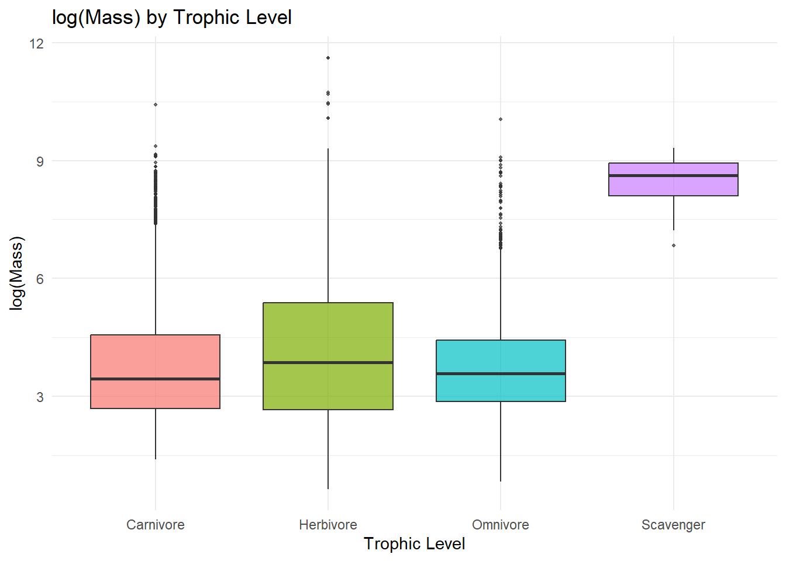
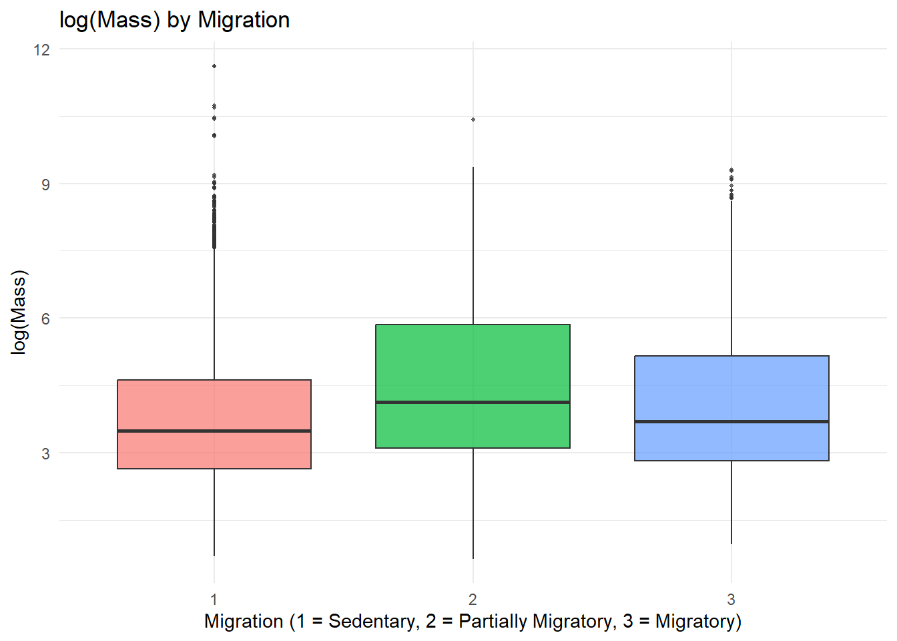
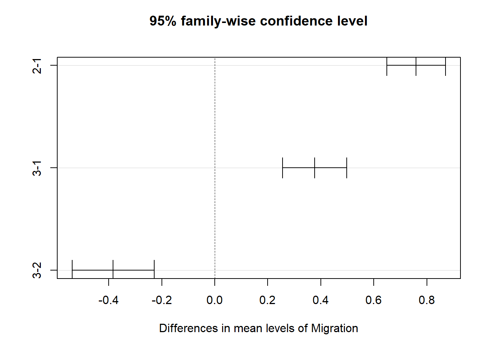
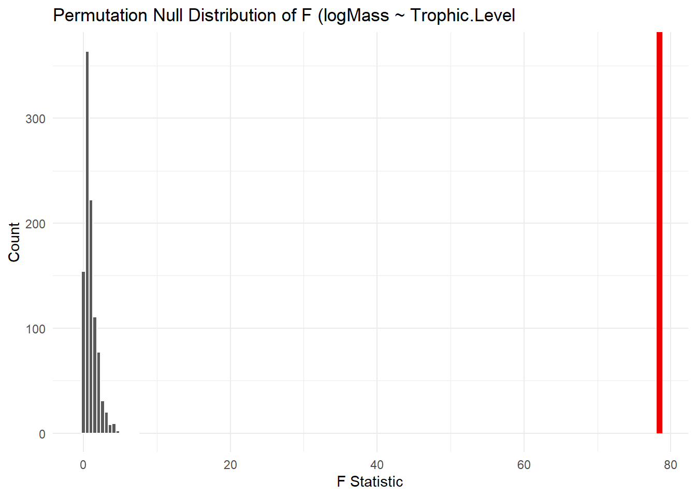
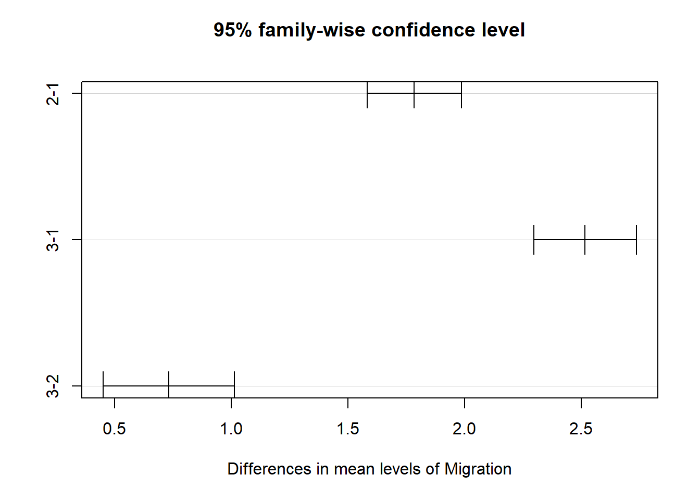
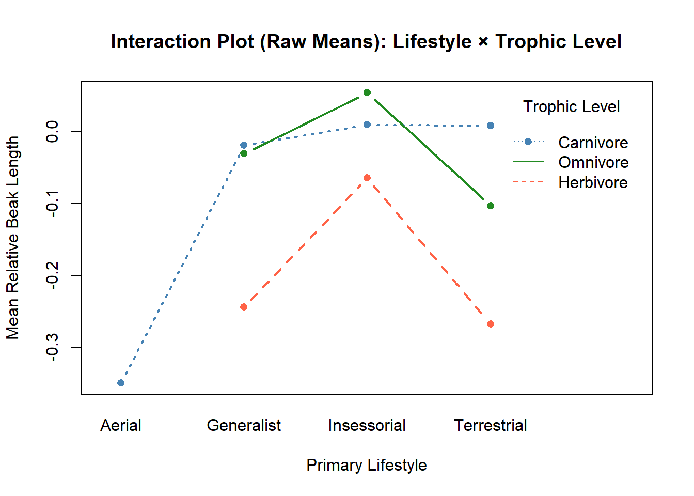
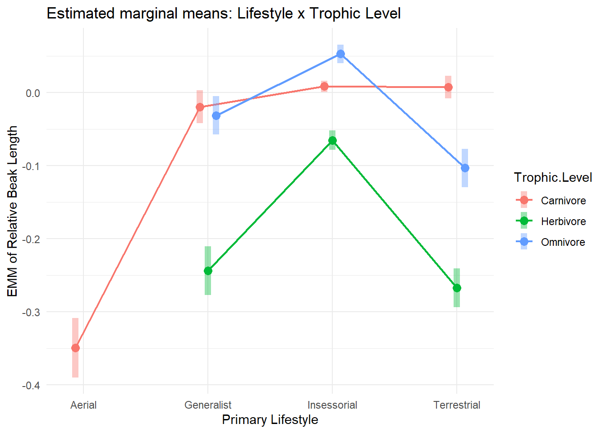
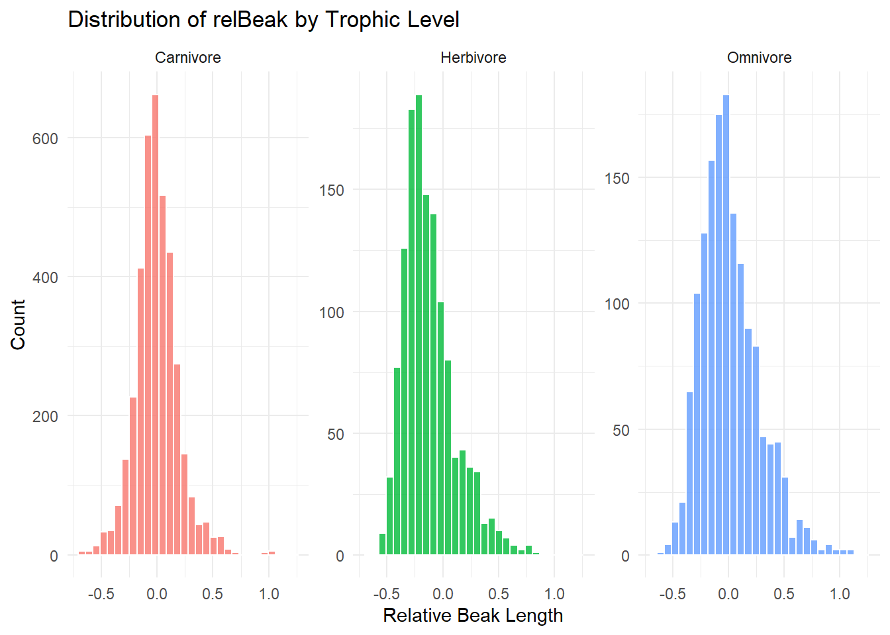
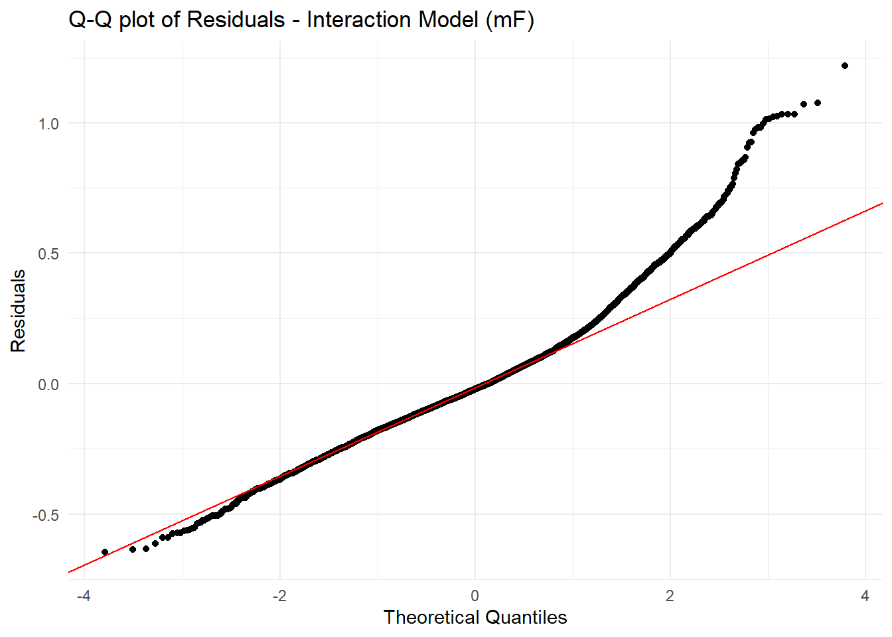

Rows: 11009 Columns: 37
── Column specification ────────────────────────────────────────────────────────
Delimiter: ","
chr (13): Species1, Family1, Order1, Avibase.ID1, Mass.Source, Mass.Refs.Oth...
dbl (24): Sequence, Total.individuals, Female, Male, Unknown, Complete.measu...
ℹ Use `spec()` to retrieve the full column specification for this data.
ℹ Specify the column types or set `show_col_types = FALSE` to quiet this message.
Make boxplots of log(Mass) in relation to Trophic.Level and Migration behavior type. For each plot, drop from the visualization all species records where the categorical variable of interest is missing from the dataset. Also, you will want to convert the variable Migration (which is scored as a number: “1”, “2”, or “3”) from class numeric to either being classified as a factor or as a character (string) variable.
#Step 1d<- d%>%mutate(Migration =as.factor(Migration)) #Migration to factor# Boxplot: log(Mass) by Trophic Leveld %>%filter(!is.na(Trophic.Level))%>%ggplot(aes(x = Trophic.Level, y =log(Mass), fill = Trophic.Level))+geom_boxplot(alpha =0.7, outlier.size =0.8)+labs(title ="log(Mass) by Trophic Level",x ="Trophic Level", y ="log(Mass)" )+theme_minimal()+theme(legend.position ="none")

#Boxplot: log(Mass) ~ Migration (drop NAs in Migration)d %>%filter(!is.na(Migration))%>%ggplot(aes(x = Migration, y =log(Mass), fill = Migration))+geom_boxplot(alpha =0.7, outlier.size =0.8)+labs(title ="log(Mass) by Migration",x ="Migration (1 = Sedentary, 2 = Partially Migratory, 3 = Migratory)", y ="log(Mass)" )+theme_minimal()+theme(legend.position ="none")

Step 2
# Step 2## Run linear models using the lm() function to look at the relationship between log(Mass) and Trophic.Level and between log(Mass) and Migration.mA<-lm(log(Mass) ~ Trophic.Level, data = d %>%filter(!is.na(Trophic.Level)) )summary(mA)
Call:
lm(formula = log(Mass) ~ Trophic.Level, data = d %>% filter(!is.na(Trophic.Level)))
Residuals:
Min 1Q Median 3Q Max
-3.4229 -1.1551 -0.3028 0.8982 7.5526
Coefficients:
Estimate Std. Error t value Pr(>|t|)
(Intercept) 3.80834 0.01967 193.632 < 2e-16 ***
Trophic.LevelHerbivore 0.25639 0.03406 7.528 5.54e-14 ***
Trophic.LevelOmnivore 0.01422 0.04116 0.345 0.73
Trophic.LevelScavenger 4.63189 0.34447 13.446 < 2e-16 ***
---
Signif. codes: 0 '***' 0.001 '**' 0.01 '*' 0.05 '.' 0.1 ' ' 1
Residual standard error: 1.538 on 11000 degrees of freedom
Multiple R-squared: 0.02094, Adjusted R-squared: 0.02067
F-statistic: 78.42 on 3 and 11000 DF, p-value: < 2.2e-16
### Examine the output of the resultant linear models. Is log(Mass) associated with either Trophic.Level or Migration category? That is, in the global test of significance, is the F statistic large enough to reject the null hypothesis of an F value of zero?mB<-lm(log(Mass) ~ Migration, data = d %>%filter(!is.na(Migration)) )summary(mB)
Call:
lm(formula = log(Mass) ~ Migration, data = d %>% filter(!is.na(Migration)))
Residuals:
Min 1Q Median 3Q Max
-3.8924 -1.1769 -0.3088 0.9152 7.8427
Coefficients:
Estimate Std. Error t value Pr(>|t|)
(Intercept) 3.77457 0.01636 230.710 < 2e-16 ***
Migration2 0.75971 0.04731 16.059 < 2e-16 ***
Migration3 0.37647 0.05155 7.303 3.02e-13 ***
---
Signif. codes: 0 '***' 0.001 '**' 0.01 '*' 0.05 '.' 0.1 ' ' 1
Residual standard error: 1.535 on 10983 degrees of freedom
Multiple R-squared: 0.02563, Adjusted R-squared: 0.02546
F-statistic: 144.5 on 2 and 10983 DF, p-value: < 2.2e-16
##Given the regression coefficients returned for your Migration model, which Migration categor(ies) are different than the reference level? What level is the reference level? Relevel and assess differences among the remaining pair of Migration categories.###Reference to 2 to assess the 1 vs 3 comparisond2 <- d %>%filter(!is.na(Migration)) %>%mutate(Migration =relevel(Migration, ref ="2"))mB2 <-lm(log(Mass) ~ Migration, data = d2)summary(mB2)
Call:
lm(formula = log(Mass) ~ Migration, data = d2)
Residuals:
Min 1Q Median 3Q Max
-3.8924 -1.1769 -0.3088 0.9152 7.8427
Coefficients:
Estimate Std. Error t value Pr(>|t|)
(Intercept) 4.53428 0.04439 102.149 < 2e-16 ***
Migration1 -0.75971 0.04731 -16.059 < 2e-16 ***
Migration3 -0.38324 0.06603 -5.804 6.67e-09 ***
---
Signif. codes: 0 '***' 0.001 '**' 0.01 '*' 0.05 '.' 0.1 ' ' 1
Residual standard error: 1.535 on 10983 degrees of freedom
Multiple R-squared: 0.02563, Adjusted R-squared: 0.02546
F-statistic: 144.5 on 2 and 10983 DF, p-value: < 2.2e-16
###Reference to 3d3<- d %>%filter(!is.na(Migration)) %>%mutate(Migration =relevel(Migration, ref ="3"))mB3 <-lm(log(Mass) ~ Migration, data = d3)summary(mB3)
Call:
lm(formula = log(Mass) ~ Migration, data = d3)
Residuals:
Min 1Q Median 3Q Max
-3.8924 -1.1769 -0.3088 0.9152 7.8427
Coefficients:
Estimate Std. Error t value Pr(>|t|)
(Intercept) 4.15104 0.04889 84.909 < 2e-16 ***
Migration1 -0.37647 0.05155 -7.303 3.02e-13 ***
Migration2 0.38324 0.06603 5.804 6.67e-09 ***
---
Signif. codes: 0 '***' 0.001 '**' 0.01 '*' 0.05 '.' 0.1 ' ' 1
Residual standard error: 1.535 on 10983 degrees of freedom
Multiple R-squared: 0.02563, Adjusted R-squared: 0.02546
F-statistic: 144.5 on 2 and 10983 DF, p-value: < 2.2e-16
Step 3
Conduct a post-hoc Tukey Honest Significant Differences test to also evaluate which Migration categories differ “significantly” from one another
#Step 3: Post-hoc Tukey HSD - MigrationmB_aov <-aov(log(Mass) ~ Migration, data = d %>%filter(!is.na(Migration)))tukey_mig<-TukeyHSD(mB_aov, which ="Migration")tukey_mig
Tukey multiple comparisons of means
95% family-wise confidence level
Fit: aov(formula = log(Mass) ~ Migration, data = d %>% filter(!is.na(Migration)))
$Migration
diff lwr upr p adj
2-1 0.7597067 0.6488157 0.8705977 0
3-1 0.3764693 0.2556282 0.4973105 0
3-2 -0.3832374 -0.5380211 -0.2284536 0
plot(tukey_mig)+theme_minimal()

NULL
Step 4
Use a permutation approach to inference to generate a null distribution of F statistic values for the model of log(Mass) in relation to Trophic.Level and calculate a p value for your original F statistic
#Step 4: Permutation-Based F Test - log(Mass) ~ Trophic.Leveld_trophic <- d %>%filter(!is.na(Trophic.Level), !is.na(Mass)) %>%mutate(logMass =log(Mass))obs_F_trophic <- d_trophic %>%specify(logMass ~ Trophic.Level)%>%calculate(stat ="F")cat("\nObserved F (logMass ~ Trophic.Level):", obs_F_trophic$stat, "\n")
Observed F (logMass ~ Trophic.Level): 78.42283
##Null distribution per permutation (1000 reps)set.seed(2026)null_dist_trophic <- d_trophic %>%specify(logMass ~ Trophic.Level) %>%hypothesise(null ="independence") %>%generate(reps =1000, type ="permute") %>%calculate(stat ="F")##Permutation p-valuep_perm_trophic <- null_dist_trophic %>%get_p_value(obs_stat = obs_F_trophic, direction ="greater")
Warning: Please be cautious in reporting a p-value of 0. This result is an approximation
based on the number of `reps` chosen in the `generate()` step.
ℹ See `get_p_value()` (`?infer::get_p_value()`) for more information.
###Visualizationvisualize(null_dist_trophic)+shade_p_value(obs_stat = obs_F_trophic, direction ="greater")+labs(title ="Permutation Null Distribution of F (logMass ~ Trophic.Level",x ="F Statistic", y ="Count" )+theme_minimal()

Challenge 2: Data Wrangling plus One- and Two-Factor ANOVA
Step 1
Create the following two new variables and add them to AVONET dataset:
#Residuals of log(Beak.Length_Culmen) ~ log(Mass) and residuals of log(Tarsus.Length) ~ log(Mass)d <- d%>%mutate(logMass =log(Mass), logBeak =log(Beak.Length_Culmen),logTarsus =log(Tarsus.Length) )## regression on complete casesbeak_model <-lm(logBeak ~ logMass, data = d, na.action = na.exclude)tarsus_model <-lm(logTarsus ~ logMass, data = d, na.action = na.exclude)## Residuals as new columns d<- d %>%mutate(relBeak =residuals(beak_model),relTarsus =residuals(tarsus_model) )cat("\nNew variables created: relBeak, relTarsus\n")
Make a boxplot or violin plot of your new relative tarsus length variable in relation to Primary.Lifestyle and of your new relative beak length variable in relation to Trophic.Niche
Call:
lm(formula = logRS ~ Migration, data = d_mig3)
Residuals:
Min 1Q Median 3Q Max
-14.5710 -1.4521 0.4357 1.9763 5.9271
Coefficients:
Estimate Std. Error t value Pr(>|t|)
(Intercept) 14.55082 0.08896 163.568 < 2e-16 ***
Migration1 -2.51702 0.09380 -26.834 < 2e-16 ***
Migration2 -0.73233 0.12015 -6.095 1.13e-09 ***
---
Signif. codes: 0 '***' 0.001 '**' 0.01 '*' 0.05 '.' 0.1 ' ' 1
Residual standard error: 2.785 on 10934 degrees of freedom
Multiple R-squared: 0.0869, Adjusted R-squared: 0.08674
F-statistic: 520.3 on 2 and 10934 DF, p-value: < 2.2e-16
## Post-hoc Tukey HSDmC_aov <-aov(logRS ~ Migration, data = d_mig)tukey_RS <-TukeyHSD(mC_aov, which ="Migration")tukey_RS
Tukey multiple comparisons of means
95% family-wise confidence level
Fit: aov(formula = logRS ~ Migration, data = d_mig)
$Migration
diff lwr upr p adj
2-1 1.7846901 1.582952 1.986428 0
3-1 2.5170168 2.297150 2.736883 0
3-2 0.7323266 0.450689 1.013964 0
plot(tukey_RS)+theme_minimal()

NULL
Step 4
Winnow your original data to just consider birds from the Infraorder “Passeriformes” (song birds).
#Filter to Passeriformes; One-Factor ANOVAs for relBeakpass <- d %>%filter(Order1 =="Passeriformes",!is.na(relBeak),!is.na(Primary.Lifestyle),!is.na(Trophic.Level) )cat("\nPasseriformes subset:", nrow(pass), "species\n")
## Conclusion: The nD1 abd nD2 are the most accurate according to the AIC values. It means than using just one predictor we will get a better coefficient than using two.
Step 7
Use the interaction.plot() and either the plot_model() or emmip() function to visualize the interaction between Primary.Lifestyle and Trophic.Level, based on both [1] the raw dataset and [2] your model that includes an interaction term.
# Interaction Plots## Base R interaction.plot() — raw dataset group meansinteraction.plot(x.factor = pass$Primary.Lifestyle,trace.factor = pass$Trophic.Level,response = pass$relBeak,fun= mean,type="b",col=c("steelblue", "tomato", "forestgreen", "goldenrod"),pch=16,lwd=2,xlab="Primary Lifestyle",ylab="Mean Relative Beak Length",main="Interaction Plot (Raw Means): Lifestyle × Trophic Level",legend=TRUE,trace.label="Trophic Level")+theme_minimal()

NULL
## estimated marginal means with CIsemmip(mF, Trophic.Level ~ Primary.Lifestyle, CIs =TRUE)+labs(title ="Estimated marginal means: Lifestyle x Trophic Level",x ="Primary Lifestyle",y ="EMM of Relative Beak Length" )+theme_minimal()
Warning: Removed 2 rows containing missing values or values outside the scale range
(`geom_point()`).
Warning: Removed 2 rows containing missing values or values outside the scale range
(`geom_line()`).
Warning: Removed 2 rows containing missing values or values outside the scale range
(`geom_segment()`).
Warning: Removed 2 rows containing missing values or values outside the scale range
(`geom_point()`).

Step 8
Use this approach to see whether variances in across groups in your various models (e.g., for relative beak length ~ trophic level) are roughly equal. Additionally, do a visual check of whether observations and model residuals within groups look to be normally distributed.
# A tibble: 4 × 4
Primary.Lifestyle n sd groups
<chr> <int> <dbl> <chr>
1 Aerial 100 0.199 drop
2 Generalist 705 0.180 drop
3 Insessorial 4643 0.224 drop
4 Terrestrial 1166 0.206 drop
cat("SD ratio (max/min) ~ Primary.Lifestyle:",round(max(sd_lifestyle$sd) /min(sd_lifestyle$sd), 3), "\n")
SD ratio (max/min) ~ Primary.Lifestyle: 1.244
## Levene's testleveneTest(relBeak ~ Trophic.Level, data = pass)
Warning in leveneTest.default(y = y, group = group, ...): group coerced to
factor.
Levene's Test for Homogeneity of Variance (center = median)
Df F value Pr(>F)
group 2 89.547 < 2.2e-16 ***
6611
---
Signif. codes: 0 '***' 0.001 '**' 0.01 '*' 0.05 '.' 0.1 ' ' 1
leveneTest(relBeak ~ Primary.Lifestyle, data = pass)
Warning in leveneTest.default(y = y, group = group, ...): group coerced to
factor.
Levene's Test for Homogeneity of Variance (center = median)
Df F value Pr(>F)
group 3 7.6847 4.008e-05 ***
6610
---
Signif. codes: 0 '***' 0.001 '**' 0.01 '*' 0.05 '.' 0.1 ' ' 1
## Histograms to visualize pass%>%filter(!is.na(Trophic.Level)) %>%ggplot(aes(x = relBeak, fill = Trophic.Level))+geom_histogram(bins =30, color ="white", alpha =0.8)+facet_wrap(~ Trophic.Level, scales ="free_y")+labs(title ="Distribution of relBeak by Trophic Level",x ="Relative Beak Length",y ="Count" )+theme_minimal()+theme(legend.position ="none")

## QQPlot within Trophic.Level by grouppass %>%filter(!is.na(Trophic.Level)) %>%ggplot(aes(sample = relBeak))+stat_qq()+stat_qq_line(color ="red")+facet_wrap(~ Trophic.Level)+labs(title ="QQ Plot of Relative Beak Length by Trophic Level",x ="Theoretical Quantiles",y ="Sample Quantiles" )+theme_minimal()
## Q-Q plot of model residualstibble(res =residuals(mF)) %>%ggplot(aes(sample=res))+stat_qq()+stat_qq_line(color="red")+labs(title ="Q-Q plot of Residuals - Interaction Model (mF)",x ="Theoretical Quantiles",y ="Residuals" )+theme_minimal()

cat("\n Exercise 10 complete - all Challenges and Steps addressed. \n")
Exercise 10 complete - all Challenges and Steps addressed.